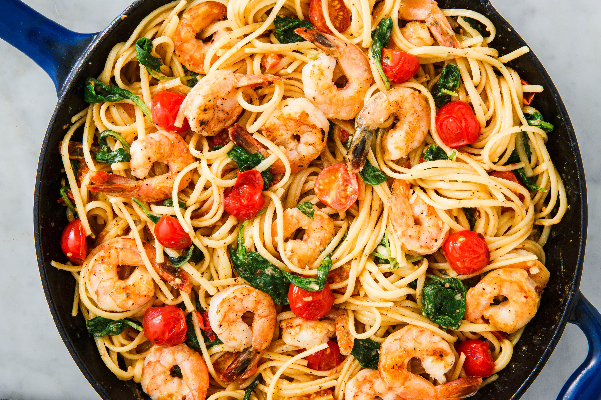

Linguine Pasta with Shrimp and Tomatoes

Description
When your homegrown tomatoes are ripe, this is a perfect recipe to use lots of them and have a mouthwatering meal. Canned tomatoes can also be used.
Ingredients
- 2 tablespoons olive oil
- 3 cloves garlic, minced
- 4 cups diced tomatoes
- 1 cup dry white wine
- 2 tablespoons butter
- salt and black pepper to taste
- 1 (16 ounce) package linguine pasta
- 1 pound peeled and deveined medium shrimp
- 1 teaspoon Cajun seasoning
- 2 tablespoons olive oil
Steps
- Heat 2 tablespoons of olive oil in a large saucepan over medium heat. Stir in the garlic; cook 2 minutes. Add the tomatoes, and wine. Bring to a simmer and cook 30 minutes, stirring frequently. Once the tomatoes have simmered into a sauce, stir in the butter and season with salt and pepper.
- Fill a large pot with lightly-salted water; bring to a rolling boil; stir in the linguine and return to a boil. Cook the pasta uncovered, stirring occasionally, until the pasta has cooked through but is still firm to the bite, about 11 minutes. Drain well in a colander set in the sink.
- Season the shrimp with the Cajun seasoning, salt, and pepper. Heat the remaining 2 tablespoons of olive oil in a large skillet over medium-high heat. Stir in the shrimp and cook until pink on the outside and no longer translucent in the center, about 5 minutes. Stir the shrimp into the pasta sauce, then stir the sauce into the linguine to serve.